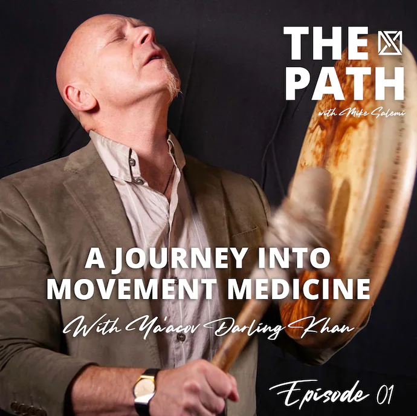

B845 · A Journey into Movement Medicine
Hi {first_name},
As the symbolic beginning of The Path Podcast, this is the perfect way to start.
Ya'acov Darling Khan has the wisdom of an elder and the humbleness of a friend. He is a modern-day shaman with over 30 years of experience teaching globally and is known for his down-to-earth strength, humility, and humor.
In this conversation, he shares the knowledge he has gleaned from his studies with gifted healers from around the world, from the Arctic to the Amazon.
Ya'acov and I discuss: • The physiological effects of the Shamanic drum on the human body • Using dance to transform self-consciousness into a conscious presence • The challenges of Western culture that lead to unbalanced masculine and feminine energy • The power that comes from embracing anger • Uncovering the roots of depression • Ya’acov’s guided drumming meditation
There is a SUPER special gift in the final minutes of the show so do listen until the end ; )
 Click here to listen on Apple.
Click here to listen on Spotify.
Also, it would be hugely appreciated if you could rate, subscribe, and review (on apple) the podcast. Your help makes a difference and will help me get more great guests on the show.
With love and passion, Mike |